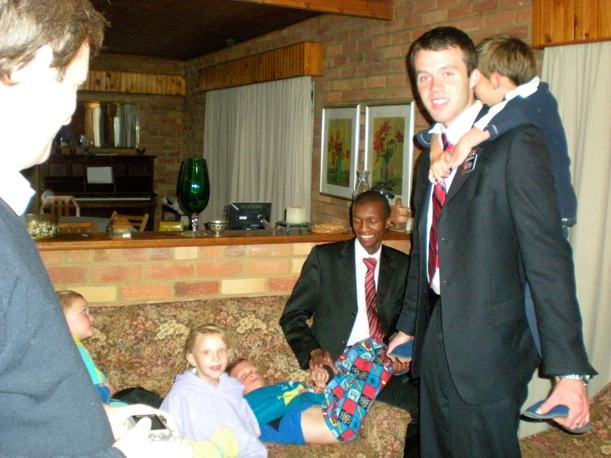
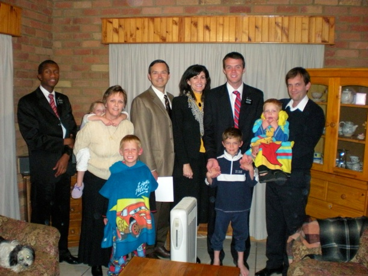

South Africa - 1
Wednesday, June 3, 2009
Deanne and I left Salt Lake City at 8:30 am Friday, May 29 to go to South Africa to pick up Aaron where he has served for 2 years in the Johannesburg mission. We flew to Atlanta for a few hour layover and then got on a plane for Johannesburg via Dakar, Senegal. The flight to Dakar was about 9.5 hours. There the plane was refueled while we waited on the plane for the flight to resume. After an hour and a half we took off for an 8 hour flight to Johannesburg. Deanne was actually able to sleep for about 3 or 4 hours, which is highly unusual. We arrived in Johannesburg about 3:30 on the afternoon of Saturday, May 30.
View of the inside of the terminal:
Retrieving our baggage. Yes, we were pretty tired! Deanne is falling asleep on her feet.
There is a lot of excitement in South Africa about hosting the 2010 Soccer World Cup.
After picking up our rental car we drove to a hotel in Roodepoort, which is on the west side of Johannesburg and close to the mission home. On Sunday we attended church at one of the wards to which Aaron is assigned, the Selcourt Ward. Aaron gave a talk in Sacrament meeting. We arrived during the sacrament hymn and it was pretty great seeing his face. He knew we were coming, but it was still amazing finally being in the same room together!
A little later we got to see Aaron baptize the daughter of a recent convert family he and his companion have been working with. The ward was super friendly and we really enjoyed meeting so many people who obviously love Aaron. After a really nice lunch with the Osburn family we visited another family (name?) for dessert. The kids absolutely loved using Aaron and his companion as mobile jungle gyms!

Photo of Deanne & I, Aaron & his companion, and the family:

Monday and Tuesday I spent at CSIR (Council for Scientific and Industrial Research), which is South Africa’s main scientific research organization. Monday Deanne came with me and got an earful about synthetic biology and nanotech. Tuesday I visited a different organization within CSIR, the National Laser Centre, and gave a presentation on the research we are doing in my group. I was very impressed with the breadth and caliber of research being done at CSIR.
The reason Deanne came with me on Monday is we decided to change hotels that day and therefore needed to check out of our original hotel in the morning. One reason for the switch is that hotel had no internet access so I couldn’t keep up with email or post pictures for Natalie and Nicole.
That night we checked into the Hotel DeOrleone in the Empress Palace by the airport. Here is a shot of the back of the hotel.
And here are a few shots of the interior. The Empress Palace turned out to be a gambling establishment.
There was a lot of construction so the statue of Zeus was dressed up appropriately.
We spent a lot of time shuttling between places on freeways and there was extensive road construction in preparation for the 2010 World Cup. Johannesburg traffic is a lot like what I remember from when we lived in Los Angeles.
Today we went to the mission home for Aaron’s last transfer meeting. It was fantastic--very spirit-filled as the new missionaries were introduced and matched up with their trainers, and the missionaries going home shared their testimonies.
At the end we opened up the trunk of our rental car to so Aaron could dispense gifts from the “goody” suitcase we brought. Yes, it’s filled with Rice Crispy Treats, Reese’s, Butterfingers, and Beef Jerky. These are apparently real delicacies for the missionaries and many of the members & investigators.

Tonight Aaron stays at the mission home with the other missionaries who are going home and then we pick him up in the morning. Woohoo! We are sure excited!